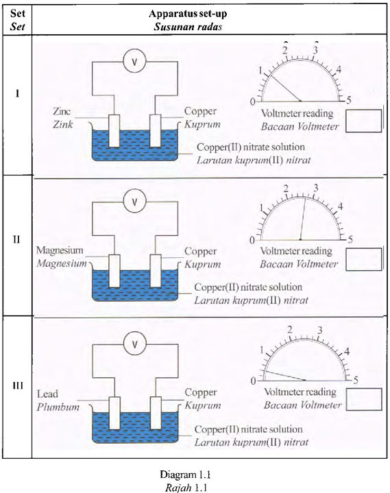
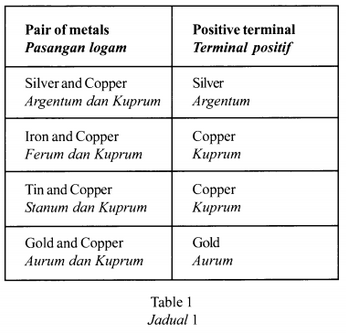
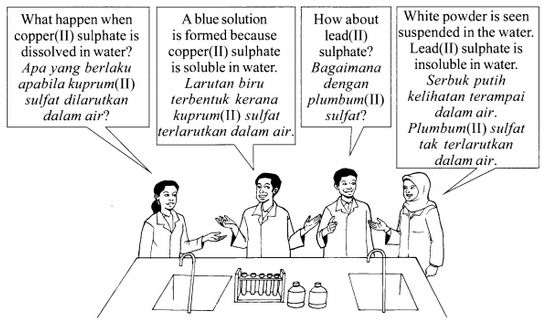

Question paper
1) Diagram 1.1 shows the apparatus set-up for an experiment of Set I , Set II and Set III to construct the electrochemical series based on the potential difference between two different metals in a voltaic cell.
Rajah l.l menunjukkan susunan radas satu eksperimen bagi Set I , Set II dan Set III untuk membina siri elektrokimia berdasarkan beza keupayaan antara dua logam berbeza dalam sel voltan.
(a) Record the voltmeter readings in the spaces provided in Diagram 1.1.
Rekod bacaan voltmeter dalam ruang yang disediakan dolam Rajah 1.1.
(b) State the variables for this experiment.
Nyatakan pembolehubah bagi eksperimen ini.
- Manipulated variable : ....................
- Responding variable : .....................
- Fixed variable : ..........................
Pembolehubah dimanipulasikan :
Pembolehubah bergerak balas:
Pembolehubah dimalarkan
(c) State one hypothesis for this experiment.
Nyatakan satu hipotesis untuk eksperimen ini.
(d) State the operational definition for the construction of electrochemical series in this experiment.
Nyatakan definisi secara operasi bagi pembinaan siri elektrokimia dalam eksperimen ini.
(e) Based on the voltmeter readings in Diagram 1.1, arrange copper, zinc, magnesium and lead, starting with the most electropositive metal.
Berdasarkan bacaan voltmeler dalam Rajah 1.1, susunkan kuprum, zink, magnesium dan plumbum, bermula dengan logom yang paling elektropositif.
(f) Diagram 1.2 shows the result of the experiment for Set II after 20 minutes.
Rajah 1.2 menunjukkan keputusan eksperimen bagi Set II selepas 20 minit.

(i) State the colour change of copper(II) nitrate solution in Diagram 1.2.
Nyatakan perubahan warna bagi larutan kuprum(II) nitrat dalam Rajah 1.2.
(ii) State the inference based on the answer in 1(f)(i).
Nyatakan inferens berdasarkan jawapan dalam 1(f)(i).
(iii) State the relationship between the change in the size of copper electrode with time.
Nyatakan hubungan antara perubahan saiz elektrod kuprum dengan masa.
(g) Metal X is placed between magnesium and zinc in the electrochemical series. Predict the voltage produced if magnesium in Set II is replaced by metal X.
Logam X terletak di antara magnesium dan zink dalam siri elektrokimia.Ramalkan voltan yang terhasil jika magnesium dalam Set II digantikan dengan logam X.
The following half-equations show the reaction that occurs at the lead electrode and copper electrode in Set III
Balance the equations by writing the number of electrons in the boxes provided.
Write the ionic equation.
Berikut adalah setengah persamaan menunjukkan tindak balas yang berlaku pada elektrod plumbum dan elektrod kuprum dalam Set III.
Seimbangkan persamaan dengan menulis bilangan elektron dalam petak yang disediakan.
Tulis persamaan ion.

Ion equation
Persamaan ion
(i) Table 1 shows the information about pairs of metals and its positive terminal in voltaic cells.
Jadual 1 menunjukkan maklumat berkenaan pasangan logam dan terminal positifnya dalam sel voltan.
Classify silver, iron, tin and gold into metals which are more electropositive than copper and metals which are less electropositive than copper.
Kelaskan argentum, ferum, stanum dan aurum kepada logam-logam yang lebih elektropositif daripada kuprum dan logam-logam yang kurang elektropositif daripada kuprum.


2) Referring to the above conversation, plan a laboratory experiment to study the solubility of sulphate salts in water. You are required to use two examples of soluble sulphate salts and two examples of insoluble sulphate salts.
Merujuk kepada perbualan di atas, rancang satu eksperimen makmal untuk mengkaji kelarutan garam sulfat dalam air. Anda dikehendaki menggunakan dua contoh garam sulfat terlarutkan dan dua contoh garam sulfat tak terlarutkan.
Your planning should include the following aspects:
Perancangan anda hendaklah mengandungi aspek-aspek berikut:
- Problem statement
- All the variables
- Statement of the hypothesis
- List of materials and apparatus
- Procedure for the experiment
- Tabulation of data
Penyataan masalah
Semua pembolehubah
Penyataan hipotesis
Senarai bahan dan radas
Prosedur eksperimen
Penjadualan data